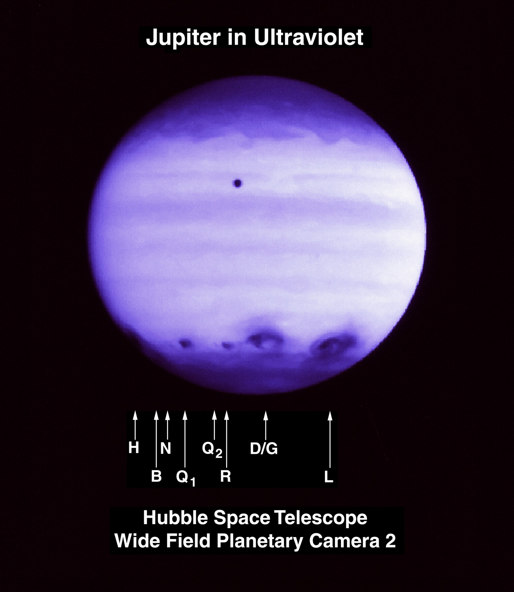
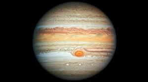
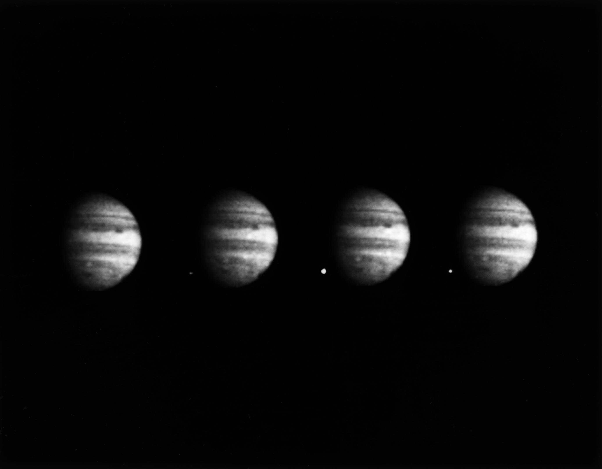
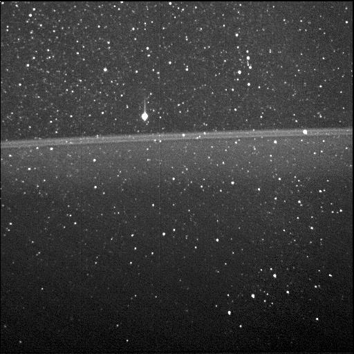
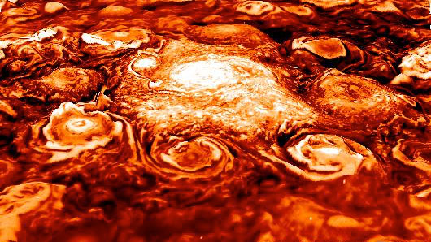
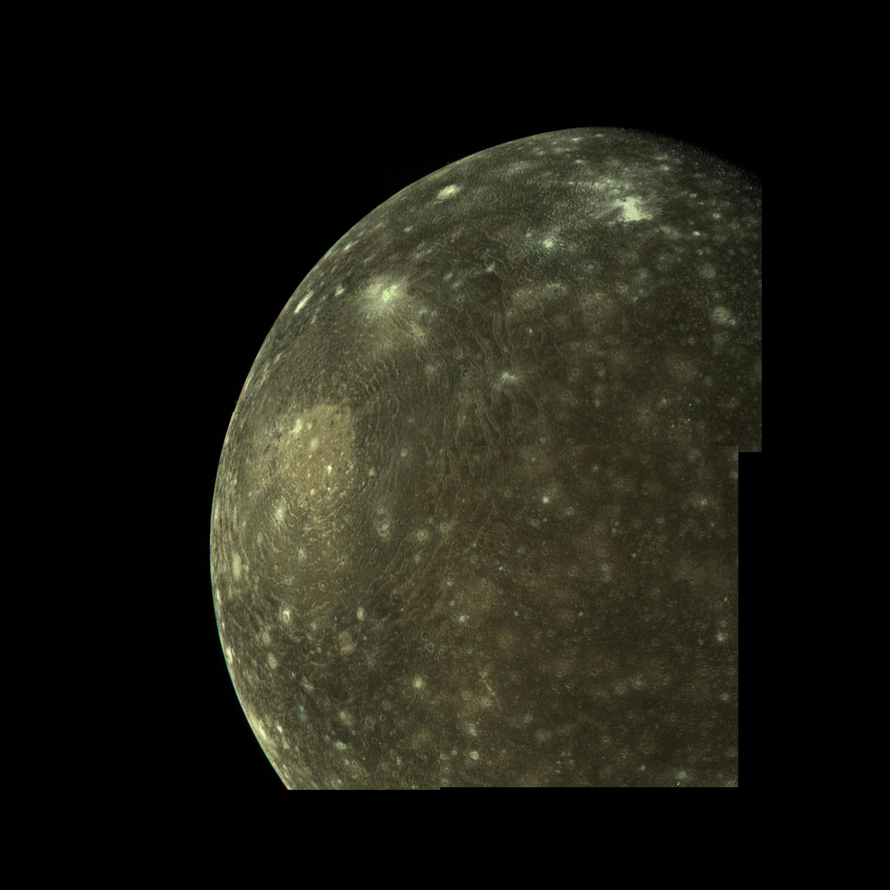

With respect to other planets
Overview
Jupiter is the fifth planet from the Sun and the largest in the Solar System. It is a gas giant with a mass one-thousandth that of the Sun, but two-and-a-half times that of all the other planets in the Solar System combined.
Jupiter is primarily composed of hydrogen with a quarter of its mass being helium, though helium comprises only about a tenth of the number of molecules. It may also have a rocky core of heavier elements,[21] but like the other giant planets, Jupiter lacks a well-defined solid surface. Because of its rapid rotation, the planet's shape is that of an oblate spheroid (it has a slight but noticeable bulge around the equator). The outer atmosphere is visibly segregated into several bands at different latitudes, resulting in turbulence and storms along their interacting boundaries.

Commonly know fact
Some Facts
- Jupiter is the fastest spinning planet In the solar system
- Jupiter Has 67 Moons.
- Jupiter has the shortest day of all planets.
- Jupiter has the strongest magnetic field of any planet in the solar system.

Jupiter
VS

Jupiter Comparision with Other Planets
Below Data are the most accurate and latest values predicted by different space agencies.
| AVERAGE ORBIT DISTANCE | |
|---|---|
| 778,340,821km | 149,598,262km |
| MEAN ORBIT VELOCITY | |
|---|---|
| 47,002km/h | 107,218km/h |
| SURFACE GRAVITY | |
|---|---|
| 24.79m/s2 | 9.80665m/s2 |
| ESCAPE VELOCITY | |
|---|---|
| 216,720km/h | 40,284km/h |
| SURFACE AREA | |
|---|---|
| 61,418,738,571km2 | 510,064,472km2 |
10 Things you need to know
1
Mercury has been known to humanity since ancient times and although its discovery date is unknown, the first mentions of the planet are believed to be around 3000 BC by the Sumerians.
2
A year in Mercury is 88 days, yet a Mercury day is 176 Earth days. Mercury is nearly tidally locked to the Sun – also known as a gravitational lock – and over time this has slowed the rotation of the planet to almost match its orbit around the Sun.
3
Mercury orbits so quickly around the Sun that early civilizations believed it was actually two different stars – one which appeared in the morning and another which appeared in the evening.
4
After the Earth, Mercury is the second densest planet. Despite its small size, Mercury is very dense because it is composed mainly of heavy metals and rock – the main characteristic of terrestrial planets.
5
Mercury is named after the messenger of the Roman gods, who is also known as Hermes in Greek mythology. This is because of the speed in which Mercury orbits the Sun and the speed with which Mercury the Roman deity was able to deliver messages.
6
Astronomers didn’t realize that Mercury was a planet until 1543 when Copernicus published his Sun-centered model of the Solar System – putting the Sun as the centre of the solar system rather than the previously believed centre, the Earth.
7
Mercury is the only planet which doesn’t rotate exactly once every year – instead rotating three times for every two orbits of the Sun. This is because it is nearly tidally locked to the Sun.
8
Mercury has a large iron core that is around 40% of its volume (compared to a core volume of 17% for Earth) in its centre whose radius is 1800 to 1900 kilometers (1100 to 1180 miles). Scientists believe the core of Mercury is probably molten.
9
Mercury has a very thin atmosphere, which is made up of atoms from the surface of the planet that have been blown away by solar winds. As Mercury is so hot, these atoms quickly escape into space and so its atmosphere is constantly being replenished.
10
Mercury has a large iron core that is around 40% of its volume (compared to a core volume of 17% for Earth) in its centre whose radius is 1800 to 1900 kilometers (1100 to 1180 miles). Scientists believe the core of Mercury is probably molten.
Gallery

Hubble's New Portrait of Jupiter
Multiple Comet Impacts on Jupiter (1994)

Comet Shoemaker-Levy 9 Fragment W Impacts Jupiter (1994)'

Jupiter's Southern Aurora

Jupiter Ring, With Orion"

A New View on Jupiter's North Pole'

Pioneer 11's Jupiter

Pioneer 10 at Jupiter

Callisto Mosaic

)Callisto Mosaic

Io's Pele Hemisphere After Pillan Changes

Earth's Moon and Jupiter's Moons